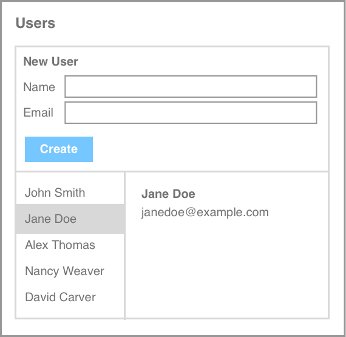

Not every project needs React or Angular to be zippy and modern.
I spent years developing Kickstrap, and its successor Kickstart. After its third version, some tinkering with Amadeus, and thousands of GitHub stars, I started work on Mozart. My goal was to create a freakishly tiny code snippet that lets us better leverage the native featurers of JavaScript while staying a little organized.
After three more years of revisions and lots of help and advice from the community, I'm ready to release it to the public.
The central idea behind Mozart is to treat your web application like a set of components.
Once we stick to that idea, we can define events, actions, routes, and configuration within the scope of each component and not worry about them running into each other.
Much of this can already be done using simple patterns and native JavaScript, Mozart just helps us to shorthand some of this and provide easy ways to loosely-couple components to one another.

Example
Consider this simple example where we want to build a contacts application. Users can go through a list of contacts in the bottom left, click on a contact to see their full details in the bottom right, or create a new contact at the top.
To make this easy for ourselves, we might want to make this one big component. Maybe this helps us to separate it from the rest of the things going on in the application.
Or maybe we make this into three components and let each one call out to the other to pass some data or execute a fucntion.
In the next sections we'll show you the different tools and patterns aided by Mozart to let you build component-driven, dependency-free JavaScript applications
Every Mozart component is a class that extends the Mozart base class. To enable the most customization, we recommend you always extend the Mozart base class with one called Component.
Your new component automatically has a set of methods. You might notice some funny stuff going on there, especially that _$ variable. We'll go through each one of these methods and cover that along the way.
Mozart doesn't provide any tooling at the moment to assist with CSS styling, but then again, you don't really need that overhead anyway.
Simply use the attirbute selector syntax to easily style only the elements in your component. This is even easier when nesting with SCSS/Sass, or a similar precompiler.
Actions
Actions are stored in a dictionary to allow for calling by name either from within the component or from another.
The idea of actions is to compartmentalize atomic concerns of your application into named routes.
This allows you to separate out event-driven logic which we'll cover next, and to make it easy to follow your code as different components talk to one another.
_$, args
You may have noticed each method has two arguments, _$ and args. When you actually call the action, you can omit the _$ as this is added in automatically.
_$ is the scoped selector, which we'll talk about a little more in the next section. args can be anything you want. We recommend treating this as a simple JavaScript object for passing any arguments you wish.
Events
Events are simply the events that can happen on your component or an element in the component.
Mozart provides a "scoped selector" to make this easier. You can name it however you want, but we like to use _$.
_$ is a pass through for either jQuery's $, or document.querySelectorAll if you're not using it.
However, it provides an additional function by automatically scoping the query to the component. That's why we're free to be a little reckless here and just refer to the button as button. It's not necessary to use a class or ID here but I could if I wanted to.
In both examples, this event fires off a generate action. We'll cover actions next, but normally the actions would be referenced with m.generator.acts. This is another helper function _$ provides, by giving us a shorthand to the component's own methods.
Routes
Routes allow you to quickly spin up the right AJAX parameters for an AJAX call given a few parameters.
Config
The config method is a convenient way to add configuration values within the component.
Advanced
Using jQuery
Mozart will automatically return from jQuery with _$ instead of returning just plain JavaScript nodes. Just make sure jQuery is included before Mozart.
For root methods on jQuery such as $.ajax, continue using $ while using _$ for component scoped selections.
Private methods
Private methods allow you to define methods only the component itself can reach. Other components will not have access.